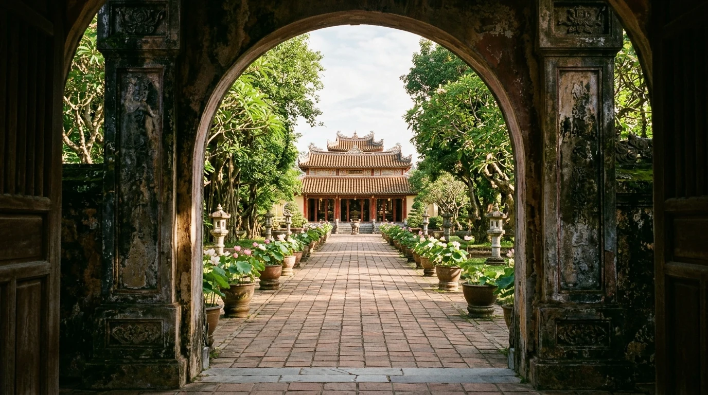

🧭 1. Tổng Quan Từ Đàm Cổ Tự & Trung Tâm Chấn Hưng Phật Giáo Việt Nam
Chùa được khai sơn vào cuối thế kỷ XVII dưới thời chúa Nguyễn Phúc Thái, ban đầu mang tên Ấn Tông Tự. Năm 1841, vua Thiệu Trị đổi tên thành Từ Đàm Tự — ngụ ý đàn từ bi rộng lớn. Từ những năm 1930, Từ Đàm trở thành trụ sở của An Nam Phật học hội và tòa soạn của báo Viên Âm — tờ báo Phật giáo đầu tiên tại Việt Nam, tiên phong trong phong trào Chấn hưng Phật giáo Trung Kỳ. Đây cũng là nơi phong trào đấu tranh Phật giáo năm 1963 khởi phát, gắn liền với những trang sử bi hùng của Phật giáo Việt Nam.
Sự kiện lịch sử trọng đại nhất diễn ra tại Từ Đàm là Đại hội thống nhất Phật giáo Việt Nam ngày 06 tháng 5 năm 1951 — khi đại diện sáu tổ chức Phật giáo từ ba miền Bắc – Trung – Nam về đây họp mặt, thành lập Tổng hội Phật giáo Việt Nam và chính thức thống nhất Phật giáo cả nước dưới một mái nhà — sự kiện lịch sử vĩ đại nhất của Phật giáo Việt Nam thế kỷ XX. Chùa hiện là Trung tâm Văn hóa Phật giáo Thừa Thiên Huế và trụ sở Ban Trị sự Giáo hội Phật giáo Việt Nam tỉnh Thừa Thiên Huế.
📜 2. Nghi Thức Hành Lễ & Gìn Giữ Di Sản Phật Giáo Từ Đàm
Chùa Từ Đàm là Trung tâm Phật giáo lớn nhất Huế, đồng thời là di tích lịch sử trọng yếu. Hành giả cần giữ thái độ trang nghiêm, ý thức bảo tồn và tôn trọng các hoạt động Phật sự đang diễn ra:
🏮 3 Quy Chuẩn Văn Minh Khi Chiêm Bái Chùa Từ Đàm
🏳️ Kính Trọng Lá Cờ Phật Giáo 5 Màu Biểu Tượng
Lá cờ Phật giáo 5 màu (xanh dương, vàng, đỏ, trắng, cam) trước cổng Từ Đàm là biểu tượng thiêng liêng của phong trào Chấn hưng Phật giáo Việt Nam: không chụp ảnh phản cảm bên dưới cột cờ và giữ thái độ kính trọng.
🏛️ Giữ Yên Tĩnh Tại Pháp Đường Lịch Sử
Pháp đường Từ Đàm là nơi diễn ra nhiều hội nghị Phật sự quan trọng và Đại hội thống nhất 1951 lịch sử: không tự ý vào khi đang có hội họp, giữ trật tự và chỉ tham quan khi được phép. Tắt điện thoại hoặc chuyển chế độ im lặng.
🪷 Dâng Lễ Thuần Chay & Không Mê Tín
Chùa Từ Đàm là trung tâm Phật giáo chính thống, đề cao tinh thần Chấn hưng và Phật giáo nhân gian: chỉ dâng hương hoa, quả ngọt thuần chay tại Tam Bảo; không đốt vàng mã, không cầu cúng mê tín dị đoan.
⛩️ 3. Lộ Trình 6 Trạm Từ Đàm & Hành Hương Di Sản Phật Giáo Việt Nam
Lộ trình 6 trạm đưa hành giả từ Cổng Tam Quan dưới lá cờ Phật giáo 5 màu, vào Chánh điện thờ Phật và Lịch đại Chư Tổ, ghé Pháp đường lịch sử 1951, kính viếng Nhà thờ Tổ Liễu Quán, thiền hành qua Bảo tháp và vườn bồ đề yên tĩnh, kết thúc bằng nghi thức hồi hướng công đức.
Hành Trình Chiêm Bái Chùa Từ Đàm — Trung Tâm Phật Giáo Thừa Thiên Huế
Cảm nhận sức sống mãnh liệt của Phật giáo Việt Nam, lắng nghe tiếng chuông Từ Đàm ngân vang và trì tụng văn khấn cầu Phật giáo Việt Nam trường tồn hưng thịnh.

Cổng Tam Quan Từ Đàm uy nghiêm với cột cờ Phật giáo 5 màu (xanh dương — vàng — đỏ — trắng — cam) tung bay phất phới là hình ảnh biểu tượng bậc nhất của Phật giáo Thừa Thiên Huế, nhắc nhớ hành giả về phong trào Chấn hưng Phật giáo Việt Nam thế kỷ XX mà Từ Đàm là trái tim.
🏳️ Ý Nghĩa 5 Màu Sắc Của Lá Cờ Phật Giáo
- Màu xanh dương: Từ bi — lòng thương yêu rộng lớn không phân biệt; màu vàng: Trí tuệ — ánh sáng giác ngộ soi đường; màu đỏ: Tinh tấn — dũng mãnh tu học không lùi bước.
- Màu trắng: Thanh tịnh — thân tâm trong sạch không ô nhiễm; màu cam: Hỷ xả — vui vẻ buông bỏ không ôm giữ chấp thủ.
- Lá cờ Phật giáo quốc tế được thống nhất tại Hội nghị Colombo 1950 và chính thức treo tại Từ Đàm trong Đại hội thống nhất 1951.
📖 Từ Đàm — Trái Tim Phong Trào Chấn Hưng Phật Giáo
- An Nam Phật học hội thành lập năm 1932 đặt trụ sở tại Từ Đàm, phát hành báo Viên Âm — tờ báo Phật giáo đầu tiên Việt Nam — để chấn hưng và hiện đại hóa Phật giáo Việt Nam.
- Từ Đàm là nơi các bậc cao tăng như HT Thích Tịnh Khiết, HT Thích Trí Thủ, HT Thích Mật Hiển hoạt động và hun đúc nền Phật giáo Việt Nam hiện đại.
- Chùa mở cửa đón khách tham quan và chiêm bái miễn phí quanh năm.
CHỨNG NHẬN CHIÊM BÁI CHÙA TỪ ĐÀM VIÊN MÃN
Chúc mừng bạn đã hoàn thành trọn vẹn lộ trình chiêm bái 6 trạm tại Từ Đàm Cổ Tự — Trung tâm Phật giáo Thừa Thiên Huế, nơi chứng kiến Đại hội thống nhất Phật giáo Việt Nam 1951 lịch sử. Nguyện cầu mười phương Chư Phật và Tổ Liễu Quán gia hộ Phật giáo Việt Nam trường tồn, gia đình an lạc, bản thân tinh tấn tu học.
🧭 4. Lịch Trình 1 Ngày Huế — Chùa Từ Đàm & Hành Trình Phật Giáo Cố Đô
Hành trình 1 ngày khám phá Phật giáo Huế (Chùa Từ Đàm nằm trong nội thành, số 1 đường Sư Liễu Quán, thuận tiện kết nối các danh lam Phật giáo cố đô):
Buổi Sáng (07h00 – 11h15): Từ Đàm, Pháp Đường 1951 & Nhà Thờ Tổ Liễu Quán
- 07h00: Khởi hành từ trung tâm Huế đến số 1 đường Sư Liễu Quán.
- 07h30: Chiêm bái Tam Quan, Chánh điện, lễ Pháp đường lịch sử nơi Đại hội 1951 và kính viếng Nhà thờ Tổ Liễu Quán.
- 09h30: Thiền hành quanh Bảo tháp Từ Đàm và nghỉ ngơi dưới vườn bồ đề yên tĩnh, cảm nhận không gian tu học giữa lòng thành phố.
Buổi Trưa (11h30 – 13h30): Cơm Chay Huế & Chè Thanh Mát
Thưởng thức bữa cơm chay truyền thống Huế tại các quán cơm chay phụ cận — bún chay Huế, cơm hến chay, chè bắp Huế mát lành và bánh ít lá gai thơm ngọt đặc trưng xứ Thần Kinh.
Buổi Chiều (13h45 – 17h00): Chùa Báo Quốc & Toàn Cảnh Sông Hương
- 13h45: Di chuyển sang Chùa Báo Quốc (đường Báo Quốc, cách Từ Đàm ~1,5km) — leo lên đồi Hàm Long, múc nước Giếng cổ tiến cung và ngắm toàn cảnh Huế từ đỉnh đồi.
- 15h30: Xuôi về phía Tây thăm Chùa Thiên Mụ (~3km) — ngọn tháp Phước Duyên 7 tầng biểu tượng cố đô Huế bên dòng sông Hương hoàng hôn.